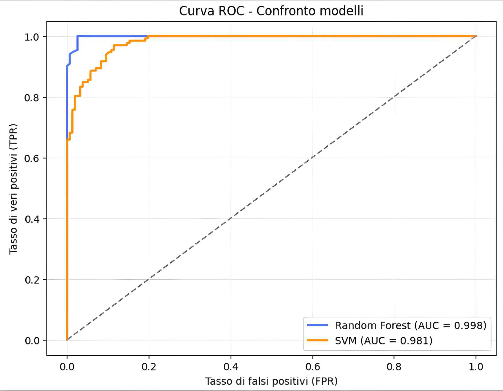
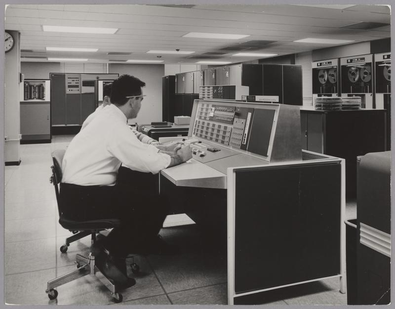
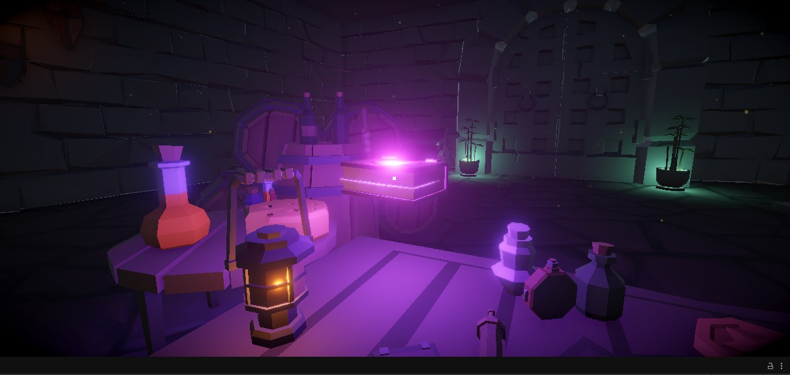

01 / DATA & MLCilento Paleocliffs
Machine learning classification of coastal palaeocliffs using geospatial features, Random Forest and Support Vector Machines. I developed the Python analysis pipeline.
Hello, I'm Davide.
I'm a Digital Humanities master's student working at the intersection of software development, cybersecurity, data analysis, and interactive digital experiences for cultural heritage.
My projects range from Python and machine learning to cybersecurity, web development and digital storytelling.
I’m especially interested in building practical digital solutions with cultural, educational and human-centered value. The projects below reflect this direction and document my academic, technical and creative work.
Five selected projects, from machine learning to interactive storytelling.

01 / DATA & MLMachine learning classification of coastal palaeocliffs using geospatial features, Random Forest and Support Vector Machines. I developed the Python analysis pipeline.
A student-oriented content portal with news, events, video lessons, search and an administrative interface. Built with Flask and SQLite.
A command-line demonstration of two-factor authentication using password verification, a MySQL database, and time-based one-time passwords.

04 / DIGITAL STORYTELLINGAn immersive, vertically scrolling story about one of the earliest chatbots and the tendency to attribute human understanding to machines.

05 / INTERACTIVE 3DA desktop 3D exploration experience in which observing objects triggers lighting, movement, particles and sound. Built with Unity and custom C# raycasting scripts.
Selected academic and educational projects. Some repositories contain demonstrations or selected source code rather than a deployable production application.
Hands-on experience developed through coursework, prototypes and independent practice.
Python · Flask · HTML · CSS · JavaScript · C# · SQL
Pandas · Scikit-learn · Machine Learning · Generative AI / LLMs · QGIS
Unity · Interactive storytelling · Figma Make · Digital Humanities
Multi-factor authentication · Security awareness · Authentication flows
Interested in collaborations, junior opportunities and projects that connect technology with meaningful human contexts.